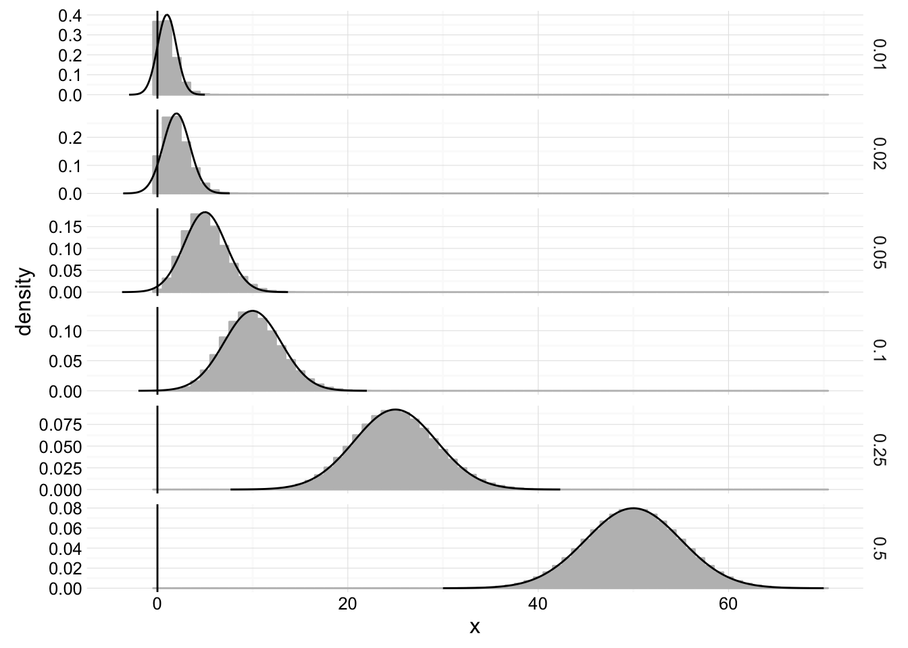
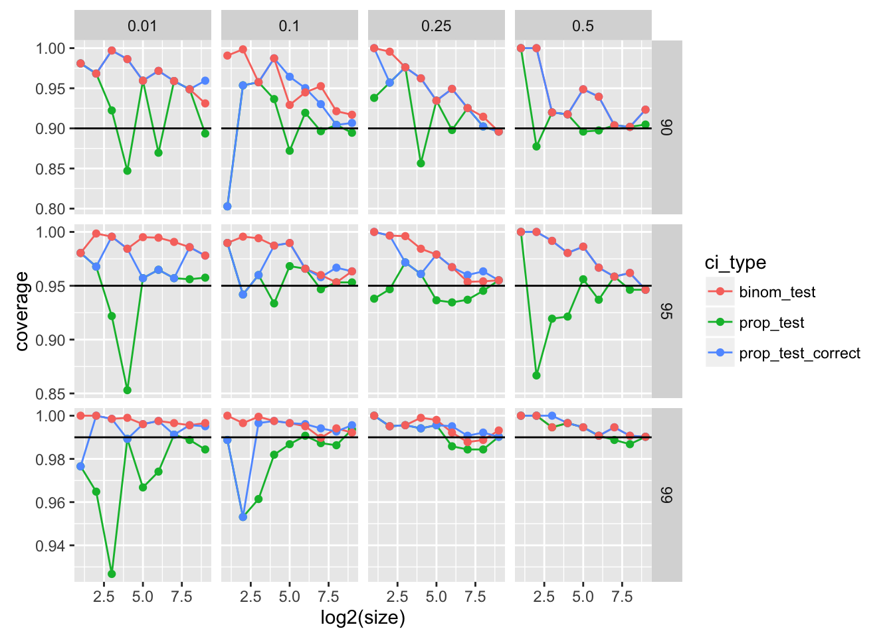

POL S/CS&SS 501, University of Washington, Winter 2016
$$ \DeclareMathOperator{\mean}{mean} \DeclareMathOperator{\var}{var} \DeclareMathOperator{\E}{E} \DeclareMathOperator{\MSE}{MSE} \DeclareMathOperator{\Bias}{Bias} \DeclareMathOperator{\SE}{se} \DeclareMathOperator{\SD}{sd} \DeclareMathOperator{\argmin}{argmin} \DeclareMathOperator{\argmax}{argmax} $$Proportion Tests
Jeffrey Arnold
February 14, 2016
library("dplyr")##
## Attaching package: 'dplyr'## The following objects are masked from 'package:stats':
##
## filter, lag## The following objects are masked from 'package:base':
##
## intersect, setdiff, setequal, unionlibrary("ggplot2")
library("tidyr")Proportion Test
TODO
Difference in Proportion Tests
TODO
Notes on the Binomial Distribution and the Normal Approximation
As \(n\) increases the Binomial distribution \(B(n, p)\) approaches the normal distribution \(N(np, \sqrt{np(1 - p)})\).1
gen_binomial <- function(size, prob, x) {
data_frame(x = x,
binomial = dbinom(x, size = size, prob = prob),
size = size,
prob = prob)
}
gen_normal_approx <- function(size, prob) {
mu <- size * prob
sigma <- sqrt(size * prob * (1 - prob))
x <- seq(mu - 4 * sigma, mu + 4 * sigma, length.out = 200)
data_frame(x = x,
normal = dnorm(x, mean = mu, sd = sigma),
normal_correct = dnorm(x + 0.5, mean = mu, sd = sigma),
size = size,
prob = prob)
}
params <- data_frame(prob = c(0.01, 0.02, 0.05, 0.10, 0.25, 0.5),
size = 100)
normal_approx <- params %>%
rowwise() %>%
do(gen_normal_approx(.$size, .$prob))
binomial_values <- params %>%
rowwise() %>%
do(gen_binomial(.$size, .$prob, 0:70))
ggplot() +
geom_bar(data = binomial_values,
mapping = aes(x = x, y = binomial), stat = "identity",
fill = "gray", color = "gray") +
geom_line(data = normal_approx,
mapping = aes(x = x, y = normal), color = "black") +
geom_vline(xintercept = 0) +
facet_grid(prob ~ ., scales = "free") +
scale_y_continuous("density") +
scale_x_continuous("x") +
theme_minimal()
There are several rules of thumb for when the normal distribution is an adequate approximation for the binomial distribution:
- \(n p\) and \(n (1 - p)\) greater than 5 or 10. The R function
prop.testuses 5. OpenIntro suggests 10. - Three standard deviations of the normal distribution are within the range of values of the binomial, \(\mu \pm 3 \sigma = np \pm \sqrt(n p (1 - p)) \in [0, n]\).
There are two alternatives to use
- The Exact Binomial Test (Clopper-Person Confidence Interval). The sampling distribution of the sum of \(n\) independent Bernoulli random variables is known: it is the Binomial distribution. Thus, instead of using the Normal approximation for the proportion, we can equivalently use the exact binomial test. However, there are a few downsides to it. First, its confidence interval is too large, since it guarantees that the confidence level is at least the confidence level given, but is not the shortest length confidence interval. Second, does not easily generalize to a difference in proportions.
- The defaults for
prop.testdo not use the version of the proportion test described in OpenIntro. They use a continuity correction, which adds 0.5 (with a few other adjustments), and helps make the continuous Normal distribution a better approximation of the discrete Binomial distribution.
Note: there are many ways to construct confidence intervals for proportions, e.g. see the Wikipedia page on Binomial proportion confidence interval. The binom in R includes many of them. However, in most practical applications this will not be a concern. The meta point of this is that statistical tests tend to work well with large samples, and not as well with small samples, so be careful making inferences from small samples.
sample_ci <- function(n, prob, conf.level = 0.95) {
# Draw number of successes from a "binomial" distribution
x <- rbinom(1, size = n, prob = prob)
# Confidence level with prop
prop_test <- prop.test(x, n, conf.level = conf.level, correct = FALSE)
# With continuity correction
prop_test_correct <- prop.test(x, n, conf.level = conf.level)
# Binomial test
binom_test <- binom.test(x, n, conf.level = conf.level)
#
ret <- data_frame(prop_test = between(prob, prop_test$conf.int[1],
prop_test$conf.int[2]),
prop_test_correct =
between(prob, prop_test_correct$conf.int[1],
prop_test_correct$conf.int[2]),
binom_test = between(prob,
binom_test$conf.int[1],
binom_test$conf.int[2]))
return(ret)
}This function will calculate the coverage for a given sample size (n), proportion (prob), confidence level (conf.level). It does so by drawing iter samples and calculating the proportion of samples with confidence intervals containing the population proportion by summarizing the results of sample_ci,
ci_coverage <- function(n, prob, conf.level = 0.95, iter = 2048) {
results <- list()
for (i in seq_len(iter)) {
results[[i]] <- sample_ci(n, prob, conf.level = conf.level)
}
bind_rows(results) %>%
summarize(prop_test = mean(prop_test),
prop_test_correct = mean(prop_test_correct),
binom_test = mean(binom_test))
}Now to compare coverage for multiple sample sizes and proportions, we need to call it for different combinations of probabilities, samples sizes, and confidence levels. The following code uses expand.grid to create all combinations of probabilities, sample sizes, and confidence levels. Then group_by and do are used to run ci_coverage for all combinations. This may take a few minutes to run. Also, you will receive many warning messages from prop.test because the proportions tests are not appropriate for small sample sizes.
coverage <-
expand.grid(prob = c(0.01, 0.1, 0.25, 0.5),
size = c(2, 4, 8, 16, 32, 64, 128, 256, 512),
conf.level = c(0.9, 0.95, 0.99)) %>%
group_by(prob, size, conf.level) %>%
do(ci_coverage(.$size, .$prob, .$conf.level)) %>%
gather(ci_type, coverage, matches("_test"))ggplot(mutate(coverage, CI = as.character(100 * conf.level)),
aes(x = log2(size), y = coverage, color = ci_type)) +
geom_line() +
geom_point() +
geom_hline(data = data_frame(conf.level = unique(coverage$conf.level),
CI = as.character(100 * conf.level)),
mapping = aes(yintercept = conf.level)) +
facet_grid(CI ~ prob, scales = "free_y")
In fact, the Normal distribution was first derived as a continuous approximation to the Binomial distribution.↩

This work is licensed under a Creative Commons Attribution-NonCommercial-ShareAlike 4.0 International License. R code is licensed under a BSD 2-clause license.